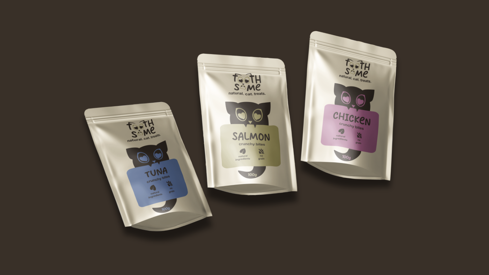
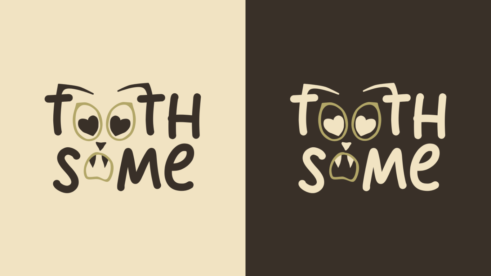
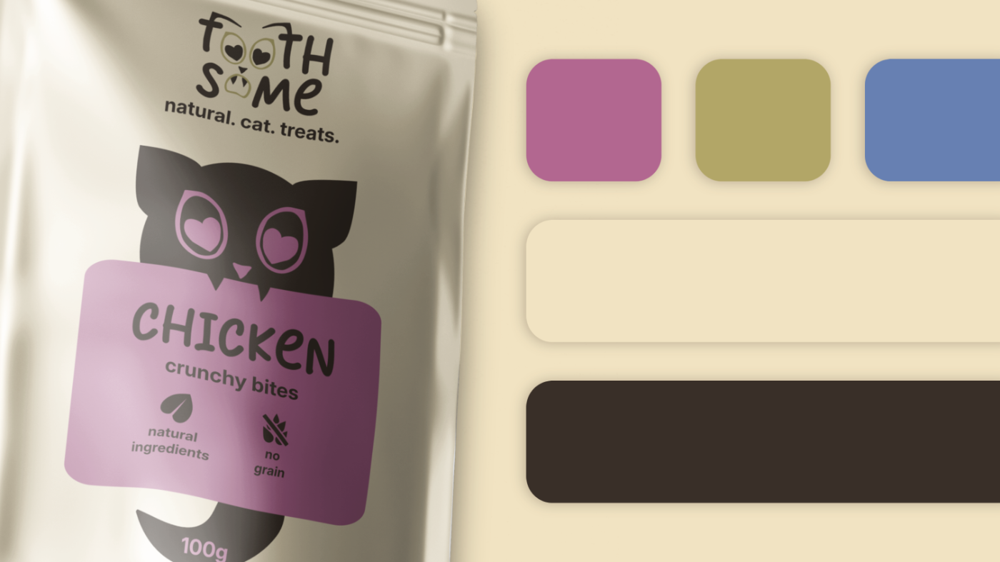
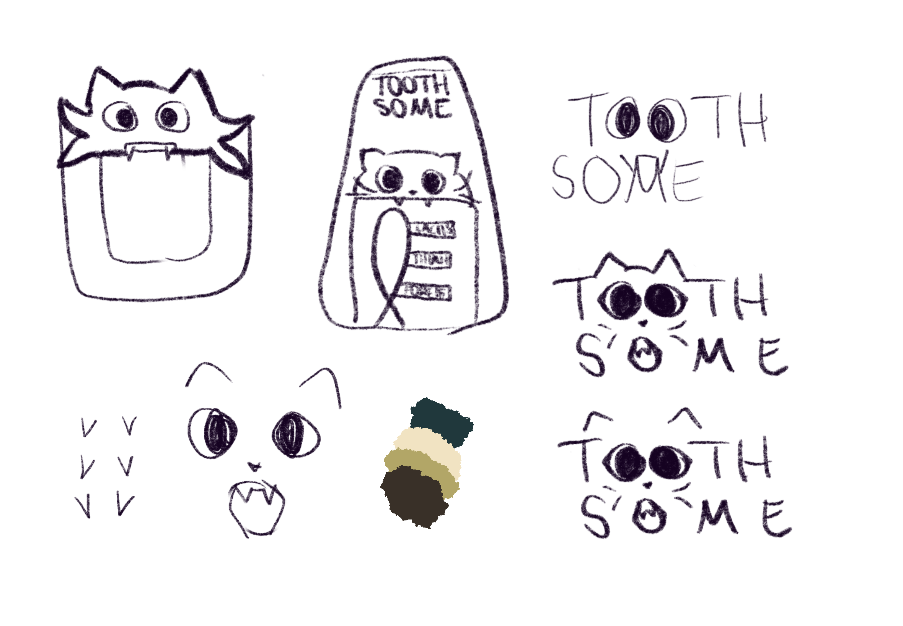

Das Brand Design der fiktiven Marke „toothsome“ beruht auf gedeckten Farben und cleanem, aber verspieltem Design.
Der Fokus hierbei war es, die Natürlichkeit des Produktes und zugleich die Freude der Katzen beim Verzehr zu übermitteln.
Variante 1
Salmon in Salbeigrün.


Das Brand Design der fiktiven Marke „toothsome“ entstand aus meiner Liebe für Katzen.
Das gestalterische Ziel war es, ein cleanes und modernes Verpackungsdesign zu kreieren, das gleichzeitig durch die integrierte Katzen-Grafik eine Verspieltheit ausstrahlt. So wird die Natürlichkeit der Leckerlis mit der Lebensfreude der Tiere beim Verzehr verknüpft, ohne das Layout visuell zu überladen.
Der kreative Prozess startete mit ersten konzeptionellen Skizzen in Procreate, um ein Gefühl für die Formen und die Platzierung der Elemente zu bekommen. Die finale Ausarbeitung erfolgte anschließend in Affinity. Dort habe ich sämtliche Elemente wie das Logo, die Katze und die Icons selbst als Vektorgrafiken erstellt.
Unterstützt wird der organische Charakter der Marke durch erdige, gedeckte Farbtöne, die natürlich wirken.
Dieses Projekt hat mir wertvolle Learnings im Bereich des Brand Designs eingebracht.
Eine besondere gestalterische Herausforderung war die Entwicklung des Logos: Hierbei lag der Fokus auf der Kombination aus dem Schriftzug und der Katzen-Grafik, die sich formtechnisch ineinander eingliedern, sodass beide Elemente nahtlos ineinander übergehen. Das eigenständige Erstellen aller Vektor-Assets und das Arbeiten innerhalb eines festen Designsystems haben meine Fähigkeiten im Corporate Design vertieft.
